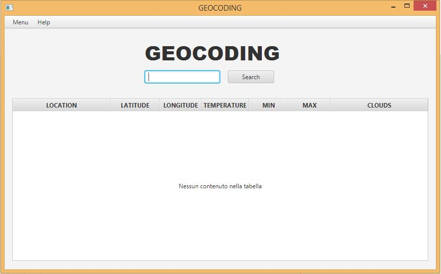
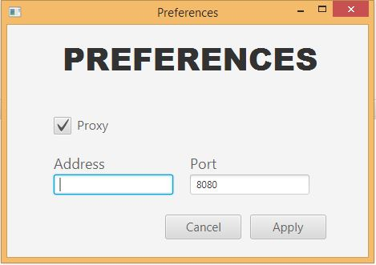
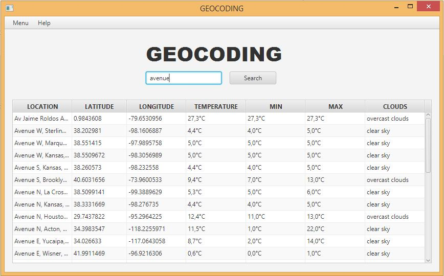

Project Description
This is a project assigned in November 2015 at IIS Castelli (5AI). It's a program that retrieve info about places and their respective weather from two web services.
Functioning
Geocode Project works using APIs from Google Maps and OpenWeather for retrieving data in XML.
WIKI
Click Here to view the Guide
Screenshots


